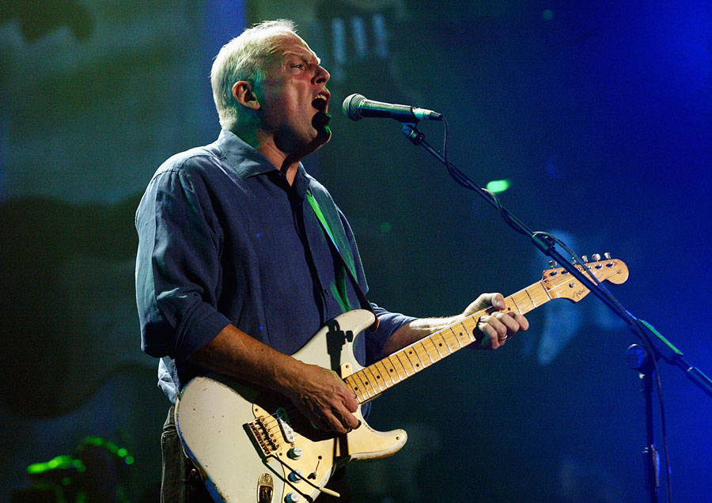

#1-SLASHヾ(⌐■_■)ノ♪
Saul Hudson (born 23 July 1965), better known by his stage name Slash, is a British–American musician and songwriter.
He is the lead guitarist of the American hard rock band Guns N' Roses, with whom he achieved worldwide success in the late 1980s and early 1990s.
In 1993, Slash formed the side project Slash's Snakepit. After leaving Guns N' Roses in 1996, he co-founded the supergroup Velvet Revolver,
which re-established him as a mainstream performer in the mid to late 2000s.
Slash has released four solo albums: Slash (2010), featuring an array of guest musicians, and Apocalyptic Love (2012), World on Fire (2014)
and Living the Dream (2018) recorded with his band, Myles Kennedy and the Conspirators.
He returned to Guns N' Roses in 2016.
#2-Kirk Hammett

Kirk Lee Hammett (born November 18, 1962) is an American musician who has been lead guitarist and a contributing songwriter for the
heavy metal band Metallica since 1983. Before joining Metallica he formed and named the band Exodus. In 2003, Hammett was ranked 11th on
Rolling Stone's list of The 100 Greatest Guitarists of All Time.[1] In 2009, Hammett was ranked number 15 in Joel McIver's book The 100 Greatest Metal Guitarists.
#3-David Gilmour

David Jon Gilmour, CBE (born 6 March 1946) is an English guitarist, singer and songwriter who was a member of the progressive rock band Pink Floyd.
He joined the group as guitarist and co-lead vocalist in 1968 shortly before the departure of founding member Syd Barrett.[1] Pink Floyd subsequently achieved
international success with the concept albums The Dark Side of the Moon, Wish You Were Here, Animals, and The Wall. By the early 1980s, they had become
one of the best-selling and most acclaimed acts in music history; by 2012, the band had sold over 250 million records worldwide, including 75 million units sold in the United States.
Following the departure of Roger Waters in 1985, Gilmour assumed leadership of Pink Floyd; they released three more studio albums before disbanding in 2014.
#4-Jimmy Page
ames Patrick Page OBE (born 9 January 1944) is an English musician, songwriter, and record producer who achieved international success as
the guitarist and founder of the rock band Led Zeppelin.
Page began his career as a studio session musician in London and, by the mid-1960s
alongside Big Jim Sullivan, was one of the most sought-after session guitarists in Britain. He was a member of the Yardbirds from 1966 to 1968. In late 1968
he founded Led Zeppelin.
#5-Angus Young
Angus McKinnon Young (born 31 March 1955) is a Scottish-Australian guitarist, best known as the co-founder, lead guitarist, songwriter and
only constant member of the Australian hard rock band AC/DC. He is known for his energetic performances, schoolboy-uniform stage outfits
and his own version of Chuck Berry's duckwalk. Young was ranked 24th in Rolling Stone magazine's 100 greatest guitarists of all-time list.
In 2003, Young and the other members of AC/DC were inducted into the Rock and Roll Hall of Fame.